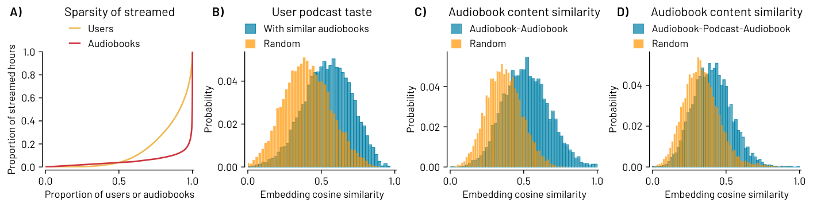
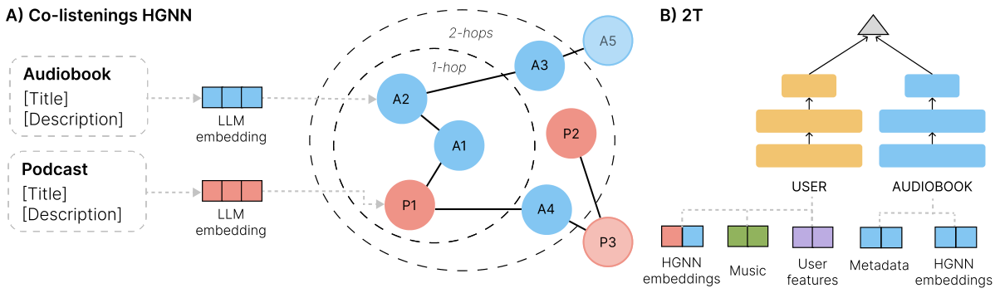

Personalized Audiobook Recommendations at Spotify Through Graph Neural Networks (Spotify 基于图神经网络的有声书个性化推荐)
- 会议/期刊: WWW 2024 (The Web Conference, Companion/Research Track)
- 作者与机构: Marco De Nadai, Francesco Fabbri, Paul Gigioli, Alice Wang, Ang Li, Fabrizio Silvestri, Laura Kim, Shawn Lin, Vladan Radosavljevic, Sandeep Ghael, David Nyhan, Hugues Bouchard, Mounia Lalmas-Roelleke, Andreas Damianou (Spotify; Sapienza University of Rome)
- 推荐链路定位: 召回（候选生成）+ 物品表征预训练（HGNN 离线产 embedding，2T 在线查 ANN 索引）
- 研究方向: 图神经网络与知识图谱推荐 / 冷启动与长尾推荐
- 论文原文: https://arxiv.org/abs/2403.05185v1
- 开源代码: https://github.com/spotify/annoy（仅开源在线 NN 检索库 Annoy，模型代码未开源）
TL;DR (1分钟核心速览)
Spotify 上线有声书时面临三重困境：新品类的极端交互稀疏 + 付费墙导致的高风险决策 + 亿级用户低延迟要求。本文提出 2T-HGNN：把用户节点从图中彻底解耦，只在"有声书-播客共听异质图"上训 2 层 GraphSAGE 式 HGNN 学物品长程表征（含 LLM 内容特征），再把该表征灌入双塔（2T）做用户-物品检索，并配套一个按边类型欠采样的均衡邻居采样器解决播客边压倒有声书边的失衡。离线全局时间戳切分（10M 用户 / 250K+ 有声书 / 3.5M+ 播客）上，热启动用户 HR@10 达 0.353（较最强基线 +36.8%），冷启动 0.200（较 2T +48.1%）；1150 万 MAU 的线上 A/B 带来新书起播率 +46.83%、播放率 +25.82%，并反向提升存量播客业务的 HR@10 +7%、覆盖率 +80%。
Background & Motivation (背景与核心矛盾)
- 主流范式: 工业推荐主流是双塔（2T）召回 + ANN 检索；学界/工业界图推荐多用含用户节点的 (H)GNN 做协同过滤式消息传递，或用 GraphSAGE 类归纳式采样控制邻居爆炸。
- 前人局限: ①含用户节点的图在 Spotify 规模下 k-hop 聚合不可行，用户图极度稀疏（大量不连通分量、平均度低），HGNN-w-users 的 MRR/覆盖率相比纯物品图分别掉 30%/53%；②纯 2T 在极度稀疏的新品类上几乎无法从协同信号学到东西（冷启动 HR@10 仅 0.135，甚至低于 Popularity 的 0.161）；③新品类初期只有付费墙后的弱信号（follow/preview/intent-to-pay），显式正反馈量极少。
- 核心洞察 (Key Insight): 作者用 90 天 8 亿+ 流媒体数据做了三组统计验证——(i) >70% 的早期有声书消费者此前有播客行为，且共听同一本书的用户在播客隐空间上显著更相似；(ii) 被共同收听的有声书对的内容嵌入（Sentence-BERT）相似度远高于随机对；(iii) 通过同一播客桥接、彼此却从未共听的两本有声书，其内容嵌入依然高度相似——这说明"有声书–播客–有声书"的 2-hop 路径是稀疏场景下可用的伪协同信号。同时逻辑回归显示 follow/preview/intent-to-pay 分别把后续起播几率提升 +118%/+18%/+13%。
- 本文切入点: 既然音频内容（书与播客）在"通勤/家务"场景共用同一消费心智，就把播客当"知识源"，在物品侧建异质共听图做长程传播，在用户侧保留轻量双塔保证实时性。

Method (核心方法设计)
1. 整体框架 (Overall Architecture)
离线每日先训 HGNN：输入是共听异质图（节点为有声书 \(a\)与播客\(p\)，边类型\(r\in\{(a,a),(a,p),(p,p)\}\)，只要有一名用户同时流播即连边），节点初始特征为标题+描述经多语言 Sentence-BERT 得到的 LLM 嵌入，两层 HGNN 输出归一化物品向量\(\mathbf{z}_c\)。随后把\(\mathbf{z}_a,\mathbf{z}_p\)喂入双塔：用户塔拼接人口统计学特征（国家、年龄）+ 音乐向量（平台预计算）+ 近 90 天交互过的有声书/播客 HGNN 向量的均值\(\bar{\mathbf{z}}_a,\bar{\mathbf{z}}_p\)（流播与弱信号都计入）；物品塔拼语言、BISAC 类目、LLM 嵌入与\(\mathbf{z}_a\)，各自输出 128 维向量。线上物品向量离线入 ANN 索引，用户向量实时前向生成后检索 top-\(k\)，端到端延迟 <100 ms。
flowchart TD
A["有声书/播客 标题+描述 → LLM(SBERT) 嵌入"] --> B["共听异质图 (a-a, a-p, p-p)"]
B --> C["2 层 HGNN + 均衡多链路邻居采样<br/>输出归一化物品向量 z_c"]
C --> D["双塔：用户塔(人口统计+音乐+历史交互均值)"]
C --> E["双塔：物品塔(元数据+LLM+ z_a)"]
D --> F["实时用户向量 → ANN 索引检索 top-k"]
E --> F
2. 关键设计拆解 (Key Designs)
- 用户解耦的异质共听图 + 归纳式 HGNN：痛点是把用户当节点会让邻域规模随亿级用户爆炸且高度稀疏。做法是彻底移除用户节点，只留物品-物品边，异质聚合算子写成按关系分别池化再求和： \(\mathbf{h}^k_{\mathcal{N}(c,r)} = \max\big(\{\sigma(\mathbf{W}_r\mathbf{h}^{k-1}_{c'}+\mathbf{b}), \forall c'\in\mathcal{N}(c,r)\}\big)\)， \(\mathbf{h}^k_c = \sigma\big(\mathbf{W}^k_c \mathbf{h}^{k-1}_c + \sum_r \mathbf{h}^k_{\mathcal{N}(c,r)}\big)\)，最终\(\mathbf{z}_c=\mathbf{h}^l_c/\|\mathbf{h}^l_c\|\)。由于聚合是归纳式的（GraphSAGE 系），从未被流播的新书仅凭 LLM 特征即可生成 embedding，天然覆盖 strict 冷启动物品；归一化后可直接内积/近邻检索。
- 均衡多链路邻居采样器（Balanced Multi-link Sampler）：痛点是有声书刚上线，\(|(p,p)|\)与\(|(a,p)|\)边数远大于\(|(a,a)|\)，均匀采样会让对比损失被播客边淹没、有声书表征学不动。做法是对多数类边类型欠采样到与少数类同量级（如取\(N\)条\(a\)-\(a\)与\(N\)条\(a\)-\(p\)），每个 epoch 重新均匀抽取以保证覆盖；训练用 hinge 对比损失： \(\mathcal{L}_{HGNN}=\mathbb{E}_{n\sim\mathcal{C}}\max\{0,\mathbf{z}_a\cdot\mathbf{z}_n-\mathbf{z}_a\cdot\mathbf{z}_p+\Delta\}\)，负样本为图中不与锚点相连的随机节点。效果是把单 epoch 期望开销从最坏\(O(|\mathcal{E}|)\) 压到可控，训练时间减少约 60%。
- 训练目标、负采样与推理：2T 用批内负样本 + 逆流行度加权（防止热门负样本主导梯度）： \(\mathcal{L}_{2T}=\mathbb{E}_{n\sim\mathcal{B}}\big[w_n\,(\mathbf{o}_u\cdot\mathbf{o}_n-\mathbf{o}_u\cdot\mathbf{o}_a)\big]\)。HGNN 侧为 margin 负采样（非 InfoNCE），2T 侧为免显式负采样池的 in-batch策略；部署上物品向量日更、用户向量实时算，书库小时用暴力检索、扩张后切 ANN（Annoy）。
Experimental Setup & Evaluation Protocol (实验设置与评估协议)
- 数据集与预处理: 90 天 Spotify 平台交互（含流播与弱信号），离线子集 10M 用户 / 3.5M+ 播客 / 250K+ 有声书；图节点特征来自标题+描述的多语言 Sentence-BERT 嵌入，无 5-core 类强过滤（保稀疏原貌）。
| 数据集 | #Users | #Items | #Interactions | 稀疏度/密度 | 特征/场景说明 |
|---|---|---|---|---|---|
| Spotify-Audiobook(离线) | 10M | 250K+ 有声书 + 3.5M+ 播客 | 90 天流播，含 198M+ 弱信号交互 | 极稀疏；25% 用户占 75% 播放时长，top 20% 书占 80% 时长 | 共听异质图 + 人口统计 + 音乐/播客/有声书历史 |
| Spotify 线上 A/B | 11.5M MAU | 同上（生产目录） | 生产流量 | — | "Audiobook for you" 首页模块随机三分组 |
- 数据划分与防穿越 (Splitting Strategy): 全局时间戳切分——训练用 90 天窗口，hold-out 为最后 14 天全部有声书/播客流播；训练集内再切 10% 作 HGNN 验证集（early stopping，连续 10 epoch 不升即停，最多 50 epoch）。
- 排名评测协议 (Ranking Protocol): 检索式 Sampled/NN 候选排序而非全库 Full-Ranking——用户向量经 k-NN 索引取候选项，HR@10 统计至少命中 1 个真实交互的比例，MRR 与 Coverage 截断在前 100 项；论文未报告负采样正负比，也未做显著性检验（离线部分）。
- 对比基线与超参设置: Popularity（90 天最热）、LLM-KNN（历史书嵌入均值最近邻）、HGNN（本文物品图，仅能服务热启动用户）、HGNN-w-users（用户-播客-有声书三分图）、2T（纯双塔）。HGNN：2 层、批 256、lr 1e-3、Adam、单卡 T4、PyG；2T：批 128、lr 1e-3、三隐含层 512/256/128、输出 128 维、10 epoch、TensorFlow。
Key Experimental Results (实验关键数据)
1. 主实验对比 (Main Results)
| Model | 热启动 HR@10↑ | 热启动 MRR↑ | 热启动 Cov↑ | 冷启动 HR@10↑ | 冷启动 MRR↑ | 冷启动 Cov↑ |
|---|---|---|---|---|---|---|
| Popularity | 0.150 | 0.100 | 0.0% | 0.161 | 0.100 | 0.0% |
| LLM-KNN | 0.164 | 0.202 | 54.7% | — | — | — |
| HGNN (物品图) | 0.258 | 0.224 | 52.8% | — | — | — |
| HGNN-w-users | 0.238 | 0.163 | 25.3% | 0.174 | 0.153 | 6.4% |
| 2T | 0.231 | 0.173 | 21.2% | 0.135 | 0.146 | 19.3% |
| 2T-HGNN (本文) | 0.353 | 0.218 | 22.3% | 0.200 | 0.156 | 12.0% |
| Improv. (vs 最强基线) | +36.8% | −2.7% | — | +14.9% / vs 2T +48.1% | +1.9% | — |
线上 A/B（11.5M MAU，同数据窗口训练）：
| Model | 播放率 (Stream rate) | 新书起播率 (New audiobook start rate) |
|---|---|---|
| 现网模型 | 基线 | 基线 |
| 2T | 无显著变化 | +23.87% |
| 2T-HGNN | +25.82% | +46.83% |
跨品类增益（播客推荐，现网即 2T）：2T-HGNN 的 HR@10 为 0.123 vs 2T 0.114（+7%），MRR 0.138 vs 0.135 基本持平，覆盖率 20.6% vs 11.4%（+80%）。
2. 消融实验 (Ablation Study)
| 变体 | HR@10↑ | MRR↑ | Coverage↑ | 相对全模型 |
|---|---|---|---|---|
| 2T-HGNN 全模型 | 0.353 | 0.218 | 22.3% | — |
| A) w/o 多边均衡采样 | 0.332 | 0.214 | 24.1% | HR −6% |
| B) w/o 弱信号 | 0.267 | 0.182 | 17.0% | HR −24% |
| C) w/o 播客-播客边 | 0.333 | 0.210 | 22.3% | HR −6% |
| D) w/o 有声书-有声书边 | 0.312 | 0.198 | 9.4% | HR −11%，Cov −57% |
| E) 仅有声书-有声书边 (2T-GNN) | 0.329 | 0.201 | 22.1% | HR −7% |
| F) 仅播客-播客边 (2T-GNN) | 0.294 | 0.192 | 10.6% | HR −16%，MRR −12%，Cov −52% |
3. 关键实验发现 (Key Findings)
- 弱信号是最大单点贡献，比任何图结构设计都重要：去掉 follow/preview/intent-to-pay 后 HR@10 从 0.353 掉到 0.267（−24%），覆盖率也从 22.3% 降到 17.0%——这与逻辑回归中 follow 使起播几率提升 +118% 的统计结论一致，说明付费墙场景必须靠"未成交意图"补足正反馈。
- 异质性是刚需，"只借播客"会崩：仅用播客-播客边的变体 F 虽保留同隐空间可直接归纳推理新书，但 HR@10 掉 16%、覆盖率腰斩 52%；反之去掉有声书-有声书边（D）让覆盖率从 22.3% 暴跌到 9.4%，证明书-书协同边是长尾扩散的主通道，播客边只提供语义桥接。
- 解耦用户是"精度换规模"的划算交易：HGNN-w-users 把用户放进图，MRR/覆盖率反而比纯物品图低 30%/53%；而 2T-HGNN 相对纯 2T 在热启动 +52% HR@10、冷启动 +48%，并在长尾分层（tier 3–5）上 HR@10/+118%、MRR/+102%，说明"离线图学物品 + 在线塔学用户"的组合在稀疏新品类上是更优折中；代价是冷启动覆盖率 12.0% 明显低于纯 2T 的 19.3%。
Highlights & Limitations (亮点、对比与审稿批判)
- 与代表作对比 (vs. Prior Work): 与 PinSage/GraphSAGE 类工业图召回相比，本文不再把用户当节点，而是把"共听"压成纯物品图的异质边，从根本上消除用户侧邻居爆炸；与 TwHIN 等异质信息网络相比，本文不依赖元路径手工设计，而是用边类型欠采样在训练期隐式平衡多关系；与纯 2T（Yi et al. 的采样偏差校正双塔）相比，本文给了 2T "内容+长程协同"的物品语义底座，冷启动从 0.135 提到 0.200。
- 可迁移亮点: ①"用户解耦 + 物品图预训练 + 2T 消费"这一三段式流水线可直接复用到任何新增品类接入存量平台的场景（短视频/直播/商品类目），且 HGNN 与 2T 可异步训练；②按边类型欠采样到同量级的采样器是一个几乎零成本、可插拔的异质图训练技巧，实测省 60% 训练时间。
- 审稿级局限批判: ①评估协议偏弱：离线仅报 HR@10/MRR/Coverage，未做全库 Full-Ranking、未给负采样比例、无重复实验与显著性检验（\(p\)值只在线上隐含），与学界标准的全排序协议不可直接对比；②MRR/Coverage 截断前 100 且覆盖率指标本身与"精度"天然冲突，本文热启动覆盖率（22.3%）甚至低于 LLM-KNN（54.7%），作者仅口头承认这一 trade-off，缺少对多样性/新颖性的系统度量；③超参（HGNN 层数仅 2、\(\Delta\)、欠采样比例）与 2-hop 传播的时效性未做敏感性分析，且图需每日重建，冷启动新书仍依赖 LLM 嵌入质量。
Rating (四维评分)
- 方法创新性 (Novelty): ⭐⭐⭐⭐ （"用户解耦异质物品图 + 边类型均衡采样 + 2T 消费"组合在工业界是务实的新范式，但单点算子多为 GraphSAGE/双塔的工程化改造，缺理论/谱分析支撑）
- 评估协议与实验扎实度 (Protocol & Experiments): ⭐⭐⭐⭐ （11.5M MAU 线上 A/B 与七组消融极具说服力，且有冷启动/长尾/跨品类三视角；但离线为采样排序、无显著性检验与全库排序基线，扣一档）
- 写作与数学规范度 (Clarity & Rigor): ⭐⭐⭐⭐ （四个 Observation 的数据分析链条清晰、公式简洁；但部分符号（如 \(\mathcal{B}\) 的加权细节、Coverage 截断）定义略松，2T 损失写成期望形式而非显式和）
- 工业落地与复现价值 (Industrial & Practical Value): ⭐⭐⭐⭐⭐ （模型已全量上线，延迟 <100ms、训练省 60% 时间，模块化设计可独立迭代；唯模型代码未开源、仅公开 Annoy 检索库，复现门槛偏高）